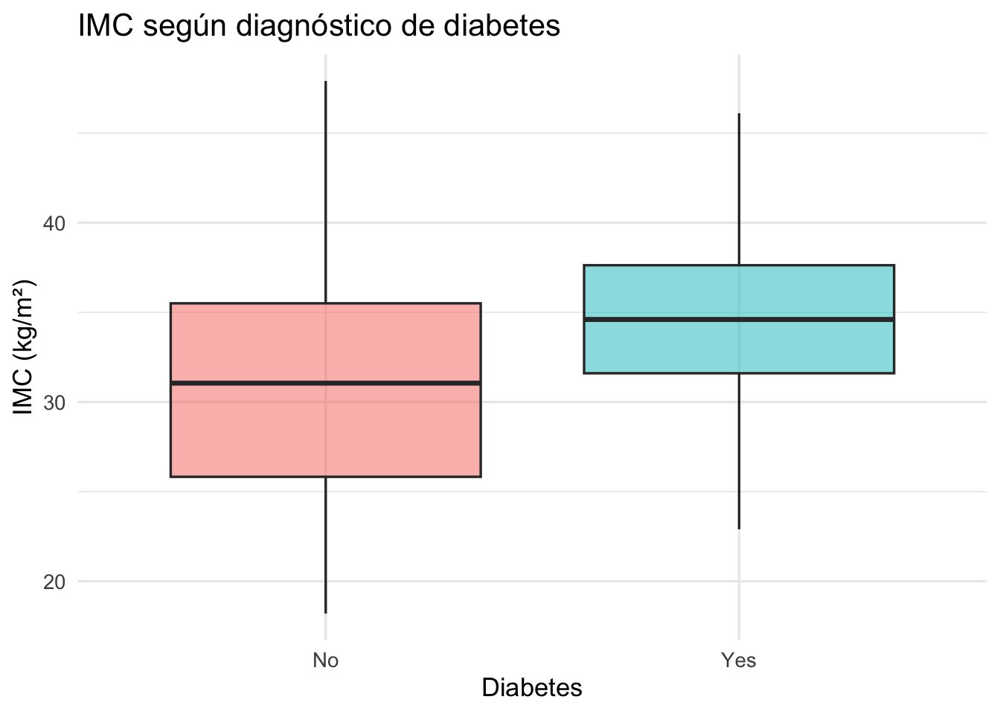
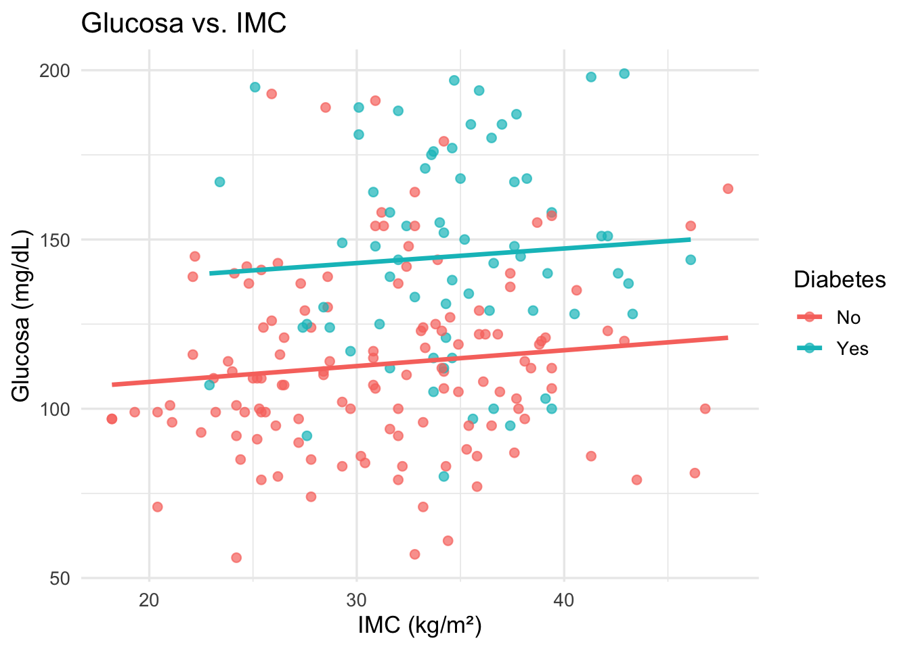
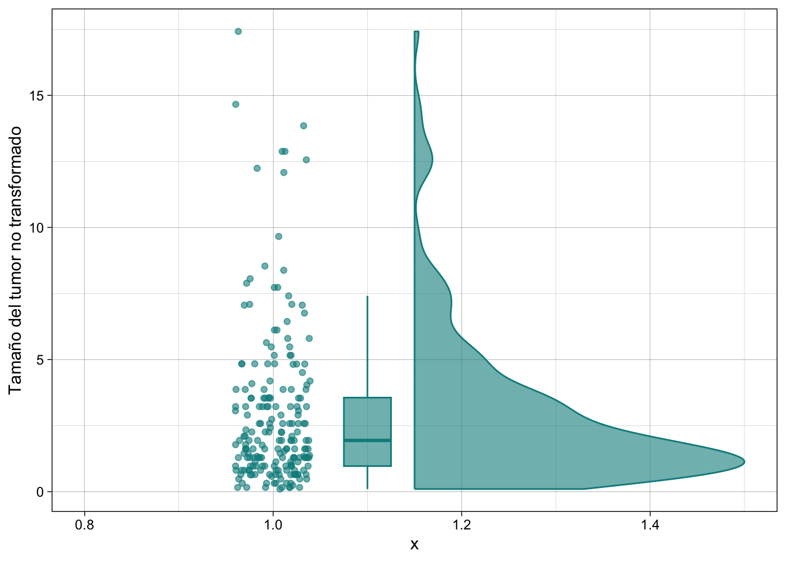
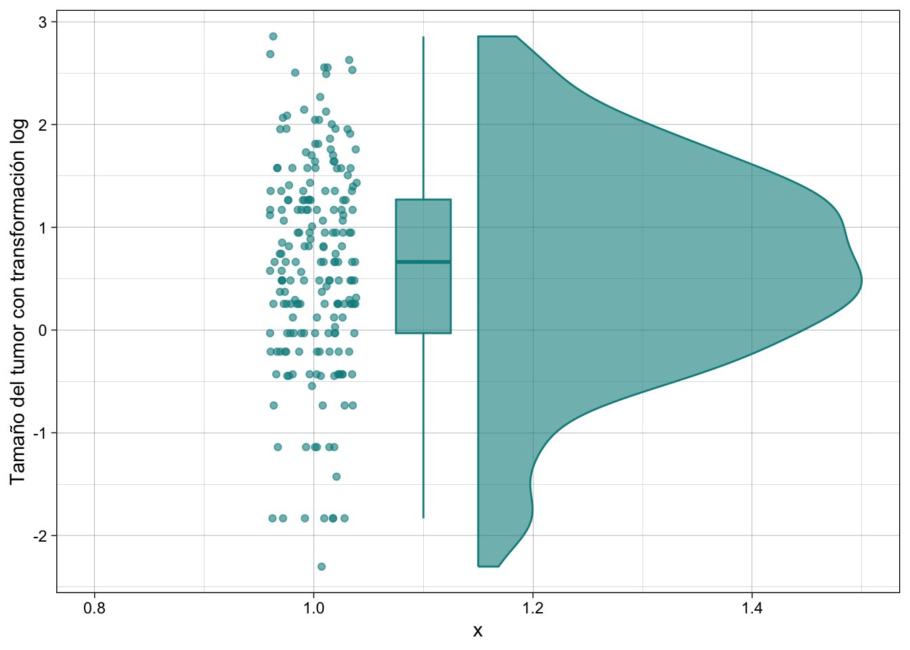
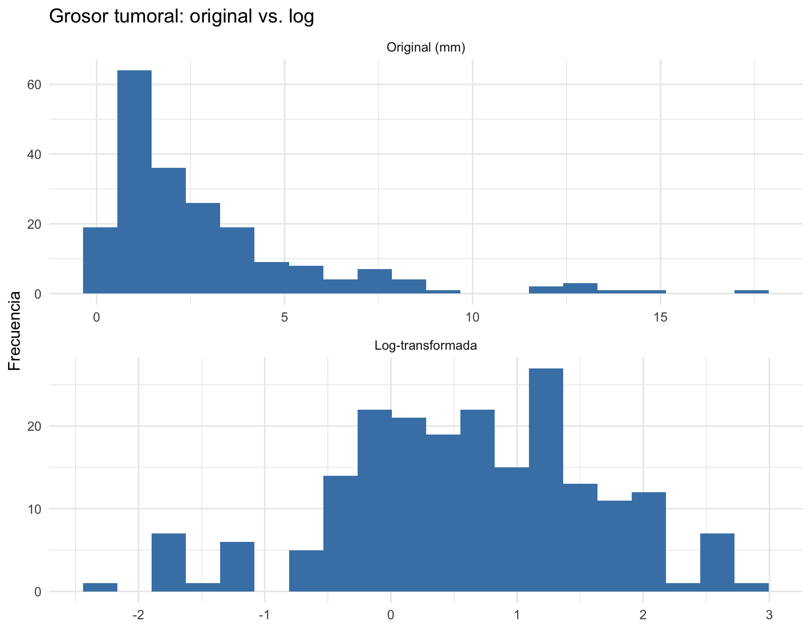
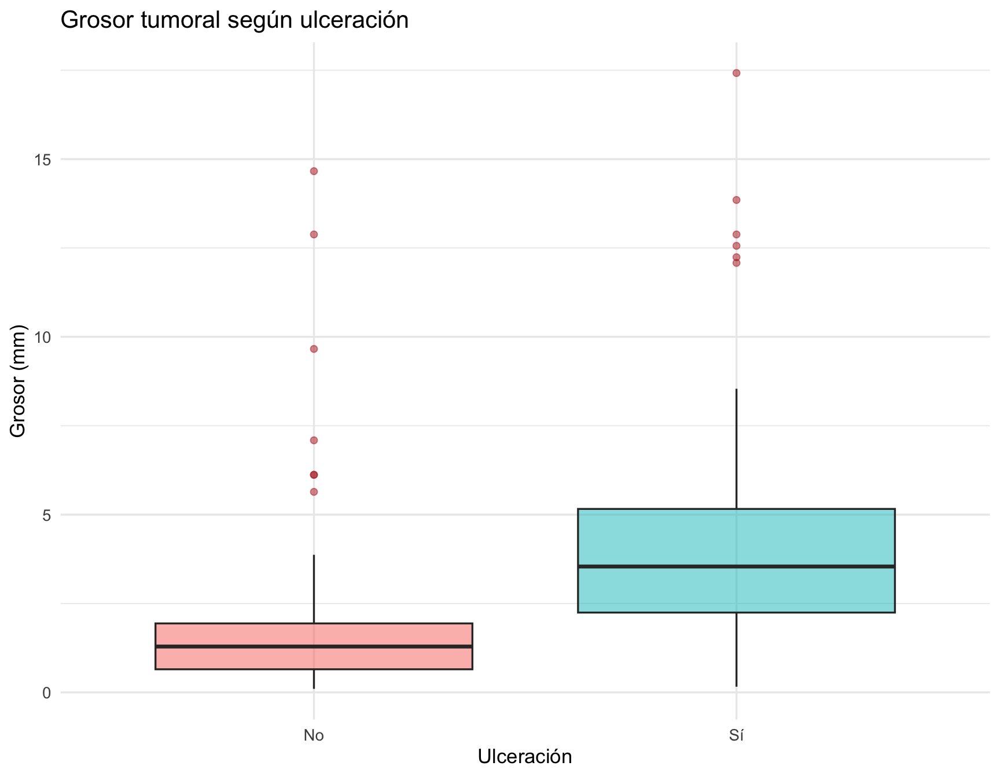

library(tidyverse)
library(ggrain)
data(Pima.tr, package = "MASS")
data(Melanoma, package = "MASS")
pima <- as_tibble(Pima.tr)
melanoma <- as_tibble(Melanoma) %>%
mutate(
ulcer_f = factor(ulcer, levels = c(0, 1), labels = c("No", "Sí")),
status_f = factor(status, levels = c(1, 2, 3),
labels = c("Murió de melanoma", "Vivo", "Murió otra causa"))
)Análisis exploratorio de datos (EDA). Generalidades
Bioestadística avanzada con R · Tema 2 · EDA, calidad y datos faltantes I
Objetivo de la sesión
Al finalizar esta sesión podrás explorar un conjunto de datos biomédico de forma sistemática, describirlo con estadística descriptiva y gráficas, y formular hipótesis que después se pondrán a prueba formalmente.
Etapas del análisis estadístico
Un análisis estadístico completo pasa por varias etapas, no solo por las pruebas de hipótesis:
- Definición de los objetivos — ¿qué pregunta busco responder?
- Diseño del estudio — transversal, cohorte, ensayo clínico…
- Recolección de datos
- Exploración de datos ← estamos aquí
- Estadística inferencial — pruebas de hipótesis, intervalos de confianza
- Interpretación de resultados
- Conclusiones
El diseño del estudio, la recolección y el análisis no se pueden separar: cada etapa condiciona a la siguiente.
Etapas: enfocándonos en “Exploración de datos”
La exploración de datos ocurre después de recolectar los datos y antes de las pruebas de hipótesis. Incluye cuatro tareas:
- Visualización de datos — es más fácil ver un patrón en una gráfica que leerlo en una tabla.
- Estadística descriptiva — resume y presenta la información contenida en los datos.
- Identificar datos atípicos y errores — ¿la edad de un paciente es 150 años?
- Formulación de hipótesis — entender los datos permite generar hipótesis nuevas, además de la pregunta original.
“El objetivo principal del análisis exploratorio de datos es conocer mis datos. No puede hacer un análisis estadístico sin conocer sus datos.”
¿Qué es un EDA?
Exploratory Data Analysis (EDA): examinar los datos para conocer su distribución, detectar atípicos y anomalías, y así dirigir las pruebas de hipótesis específicas.
- Propuesto por John Tukey (1977), se ha vuelto una metodología estándar para analizar un conjunto de datos.
- Según Howard Seltman (Carnegie Mellon University):
“Cualquier método de observar los datos que no incluya modelamiento estadístico formal ni inferencia cae bajo el término análisis exploratorio de datos.”
- Es un paso temprano, posterior a la recolección y el preprocesamiento de datos: se visualiza, grafica y manipula la información sin hacer supuestos todavía.
- La mayoría de las técnicas de EDA son gráficas — por naturaleza, explorar es más fácil visualizando.
Objetivos del EDA
- Maximizar el entendimiento de la base de datos y su estructura.
- Visualizar relaciones potenciales (dirección y magnitud) entre variables de exposición y de desenlace.
- Detectar valores atípicos y anomalías.
- Desarrollar modelos parsimoniosos (con las menos variables posibles) o preseleccionar variables apropiadas.
- Extraer y crear variables clínicamente relevantes.
Las técnicas de EDA se pueden clasificar en:
- Gráficas o no gráficas.
- Univariadas (una sola variable) o multivariadas (varias variables, con o sin desenlace).
¿Por qué es importante en datos biomédicos?
- Los datos clínicos y de investigación rara vez llegan limpios: capturas erróneas, unidades inconsistentes, valores imposibles.
- Ejemplo: identificar que la edad de un paciente con diabetes mellitus es de 150 años.
- En relación a modelos: No explorar antes de modelar, se corre el riesgo de:
- Ajustar un modelo con datos erróneos (“garbage in, garbage out”).
- Aplicar una prueba que asume normalidad a una variable muy asimétrica.
- Pasar por alto una relación importante entre variables.
- El EDA no reemplaza la inferencia estadística: la precede y la orienta.
Ejemplo de un EDA
pima.tr2 y melanoma
Bases de data de la librería MASS:
- pima.tr2: “A population of women who were at least 21 years old, of Pima Indian heritage and living near Phoenix, Arizona, was tested for diabetes according to World Health Organization criteria. The data were collected by the US National Institute of Diabetes and Digestive and Kidney Diseases. We used the 532 complete records after dropping the (mainly missing) data on serum insulin.”
pima: 200 mujeres Pima;typeindica diagnóstico de diabetes (WHO).
- Melanoma: “The Melanoma data frame has data on 205 patients in Denmark with malignant melanoma”
melanoma: 205 pacientes con melanoma maligno;thicknesses el grosor tumoral (mm).
Ejemplo de un EDA
pima.tr2 y melanoma
Técnicas no gráficas: describir y detectar atípicos
- Tendencia central: media, mediana, moda. Dispersión: varianza, desviación estándar (
sd), rango intercuartílico (IQR). - Regla práctica: distribución simétrica y N > 30 → reporta media ± DE. Distribución asimétrica, N < 30 o evidencia de atípicos → reporta mediana ± RIC (más robustas).
- Un valor fuera de 1.5 × RIC por encima de Q3 o por debajo de Q1 se considera un atípico (regla de Tukey).
- Para variables categóricas: tabulación — conteo y frecuencia por categoría.
Técnicas no gráficas: describir y detectar atípicos
summary(pima) npreg glu bp skin
Min. : 0.00 Min. : 56.0 Min. : 38.00 Min. : 7.00
1st Qu.: 1.00 1st Qu.:100.0 1st Qu.: 64.00 1st Qu.:20.75
Median : 2.00 Median :120.5 Median : 70.00 Median :29.00
Mean : 3.57 Mean :124.0 Mean : 71.26 Mean :29.21
3rd Qu.: 6.00 3rd Qu.:144.0 3rd Qu.: 78.00 3rd Qu.:36.00
Max. :14.00 Max. :199.0 Max. :110.00 Max. :99.00
bmi ped age type
Min. :18.20 Min. :0.0850 Min. :21.00 No :132
1st Qu.:27.57 1st Qu.:0.2535 1st Qu.:23.00 Yes: 68
Median :32.80 Median :0.3725 Median :28.00
Mean :32.31 Mean :0.4608 Mean :32.11
3rd Qu.:36.50 3rd Qu.:0.6160 3rd Qu.:39.25
Max. :47.90 Max. :2.2880 Max. :63.00 Técnicas gráficas Histograma: la distribución de una variable
- El histograma revela forma, modalidad, simetría y posibles atípicos.
- Hipótesis: la distribución de glucosa difiere entre mujeres con y sin diabetes.
Técnicas gráficas Histograma: la distribución de una variable

Técnicas gráficas Boxplot: comparar grupos y ver atípicos
- La caja muestra Q1, mediana y Q3; los bigotes llegan hasta 1.5 × RIC; los puntos rojos son atípicos.
- Hipótesis: el IMC medio (o mediano) es mayor en mujeres con diabetes.
Técnicas gráficas Boxplot: comparar grupos y ver atípicos

Técnicas gráficas Dispersión: relación entre dos variables continuas
- Un scatterplot muestra dirección, forma y fuerza de una relación entre dos variables.
- Hipótesis: a mayor IMC, mayor glucosa plasmática, en ambos grupos.
Técnicas gráficas Dispersión: relación entre dos variables continuas

Transformación de datos: ¿por qué transformar?
Muchas variables biomédicas (concentraciones, tiempos, tamaños de tumor) son asimétricas positivas, típicas de procesos multiplicativos.
- Transformación logarítmica (
log(),log2()): comprime valores grandes, hace más simétrica una distribución sesgada. - Estandarización (
z = (x - media) / DE): expresa cada valor en desviaciones estándar respecto a la media; permite comparar variables en escalas distintas. - Discretización (
cut()): convierte una variable continua en categorías (ej. grupos de edad).
¿Cuándo transformar? Cuando se tiene evidencia de un sesgo marcado, o cuando un método (pruebas paramétricas, regresión) asume normalidad. En la transformación se trata de preservar información.
Transformación aplicada: grosor tumoral en Melanoma
melanoma |>
ggplot2::ggplot(mapping = aes(x =1, y = thickness)) +
geom_rain(alpha =0.6, color= "cyan4", fill = "cyan4")+
theme_linedraw()+
labs(y = "Tamaño del tumor no transformado")
Transformación aplicada: grosor tumoral en Melanoma
melanoma |>
mutate(thickness = log(thickness)) |>
ggplot2::ggplot(mapping = aes(x =1, y = thickness)) +
geom_rain(alpha =0.6, color= "cyan4", fill = "cyan4")+
theme_linedraw()+
labs(y = "Tamaño del tumor con transformación log")
Transformación aplicada: grosor tumoral en Melanoma

Transformación aplicada: grosor tumoral en Melanoma
thicknessestá sesgada a la derecha; el log la vuelve más simétrica.- Hipótesis: el grosor tumoral (
thickness) no sigue una distribución normal y conviene analizarlo en escala logarítmica.
Explorando Melanoma: ulceración y estatus

Explorando Melanoma: ulceración y estatus
- Hipótesis: los tumores ulcerados son más gruesos, y la mortalidad por melanoma es más frecuente cuando hay ulceración.
melanoma %>% count(ulcer_f, status_f)# A tibble: 6 × 3
ulcer_f status_f n
<fct> <fct> <int>
1 No Murió de melanoma 16
2 No Vivo 92
3 No Murió otra causa 7
4 Sí Murió de melanoma 41
5 Sí Vivo 42
6 Sí Murió otra causa 7Explorando Melanoma: ulceración y estatus
- Hipótesis: los tumores ulcerados son más gruesos, y la mortalidad por melanoma es más frecuente cuando hay ulceración.

Formulación de hipótesis a partir del EDA
El EDA de hoy sugiere varias hipótesis, que confirmaremos formalmente con pruebas de hipótesis en las próximas sesiones:
- La distribución de glucosa difiere entre mujeres con y sin diabetes (
Pima.tr). - El IMC es mayor, en promedio o mediana, en mujeres con diabetes.
- La glucosa plasmática se asocia positivamente con el IMC.
- El grosor tumoral (
thickness) es asimétrico y requiere transformación logarítmica para su análisis. - El grosor tumoral es mayor en pacientes con ulceración presente.
- La mortalidad por melanoma se asocia con la presencia de ulceración.
(Nota: la exploración genera hipótesis; no las confirma, para eso sirve la estadística inferencial.)
Lo que sigue: calidad de datos y datos faltantes
El EDA también sirve para auditar la calidad de una base antes de analizarla:
- Rangos imposibles, unidades inconsistentes, duplicados.
- Detección de valores faltantes (
NA) y su patrón de ausencia. - La siguiente sesion veremos la primera parte relacionada los datos faltantes.
Resumen: técnicas de EDA usadas hoy
| Técnica | Función en R | Qué revela |
|---|---|---|
| Estadística descriptiva | summary(), mean(), median(), sd(), IQR() |
Tendencia central y dispersión |
| Tabulación | count(), table() |
Frecuencias de categorías |
| Histograma | geom_histogram() |
Distribución, forma, modalidad |
| Boxplot | geom_boxplot() |
Mediana, RIC, atípicos |
| Dispersión | geom_point() + geom_smooth() |
Relación entre dos variables |
| Transformación | log(), estandarización, cut() |
Corrige asimetría, hace comparables las escalas |
Ejercicio
Usando Pima.tr:
- Describe
agecon estadística descriptiva (media/mediana, DE/RIC). ¿Qué regla aplica? - Construye un histograma de
agey decide si conviene una transformación. - Construye un boxplot de
agesegúntype. - Formula una hipótesis a partir de lo que observaste, para poner a prueba más adelante.
Recursos
- Bioestadística en R para ciencias de la salud. https://www.cucs.udg.mx/libros/lectura_cucs.php?libro=Bioestadistica_enR_digital
- Komorowski M, Marshall DC, Salciccioli JD, Crutain Y. Exploratory Data Analysis, cap. 15, en: Secondary Analysis of Electronic Health Records (MIT Critical Data), 2016. https://doi.org/10.1007/978-3-319-43742-2_15
- Wickham H, Grolemund G. R for Data Science — Exploratory Data Analysis. https://r4ds.had.co.nz/exploratory-data-analysis.html
- Bravo HC. Data transformations, IntroDataSci notes. https://www.hcbravo.org/IntroDataSci/bookdown-notes/eda-data-transformations.html
- Tema 2, parte 1: Visualización de datos con ggplot2
?Pima.try?Melanomaen R, para la documentación de los conjuntos de datos